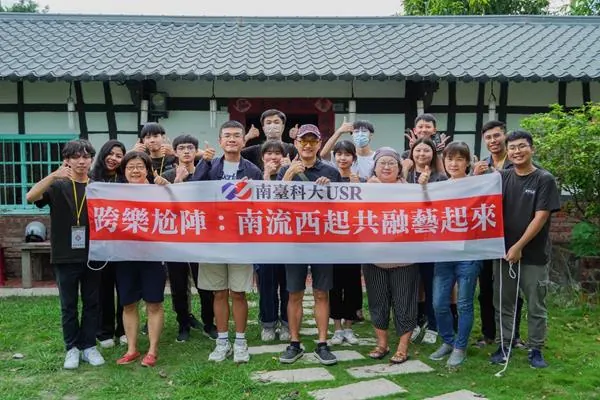
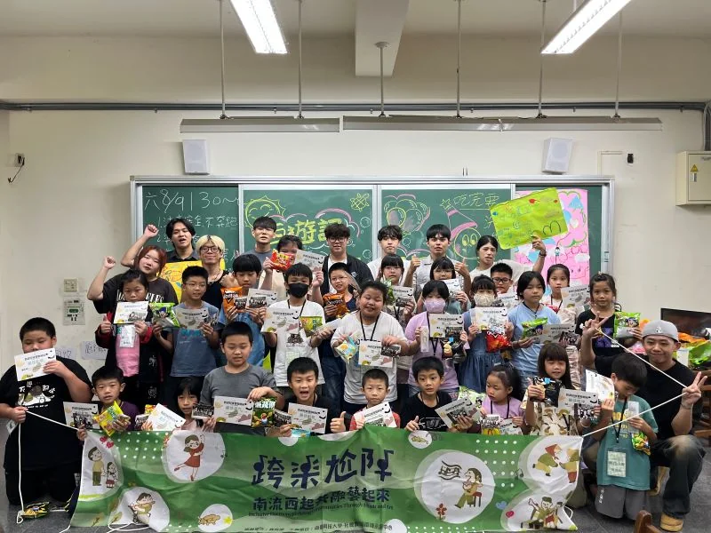
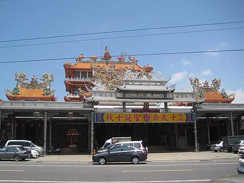
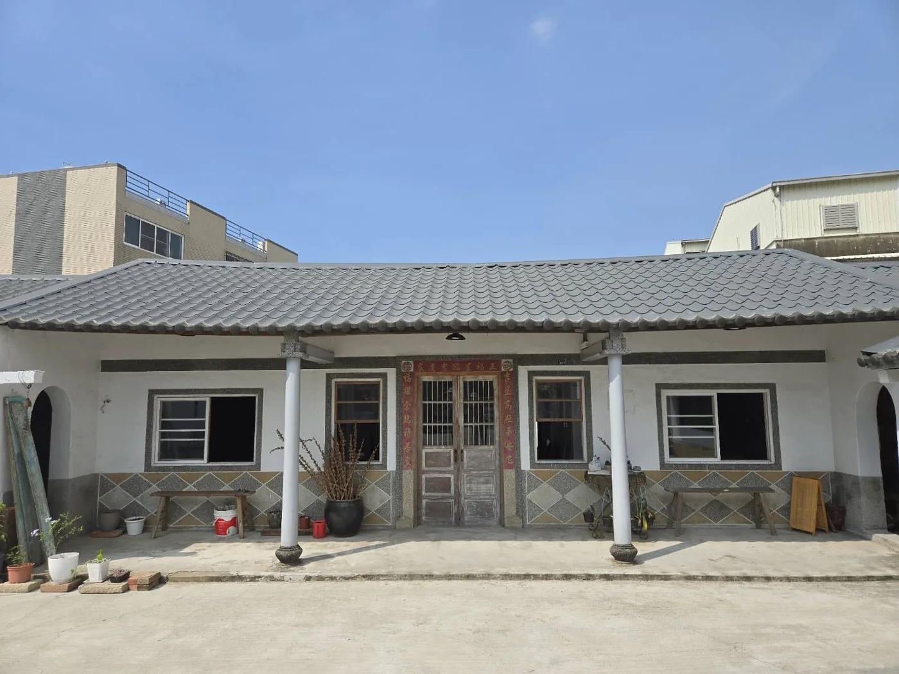
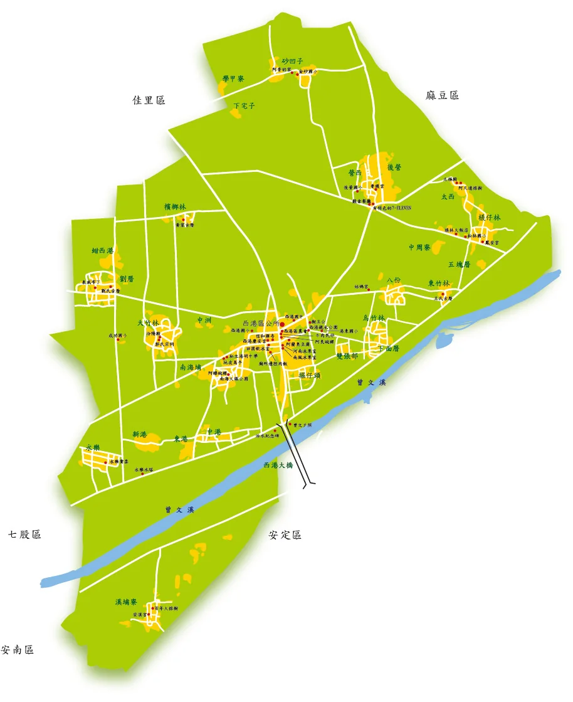
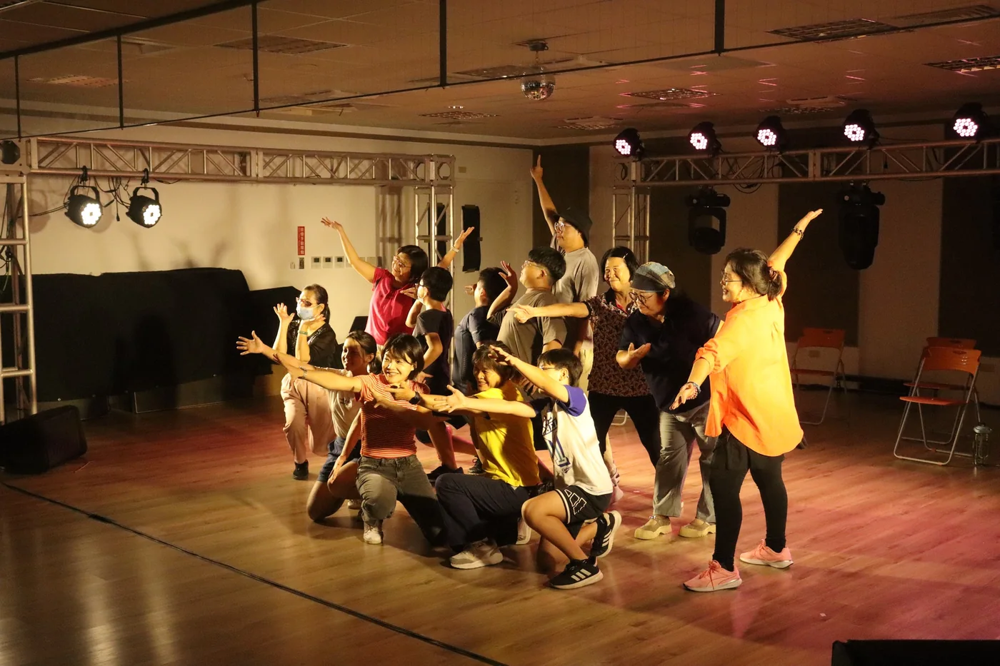
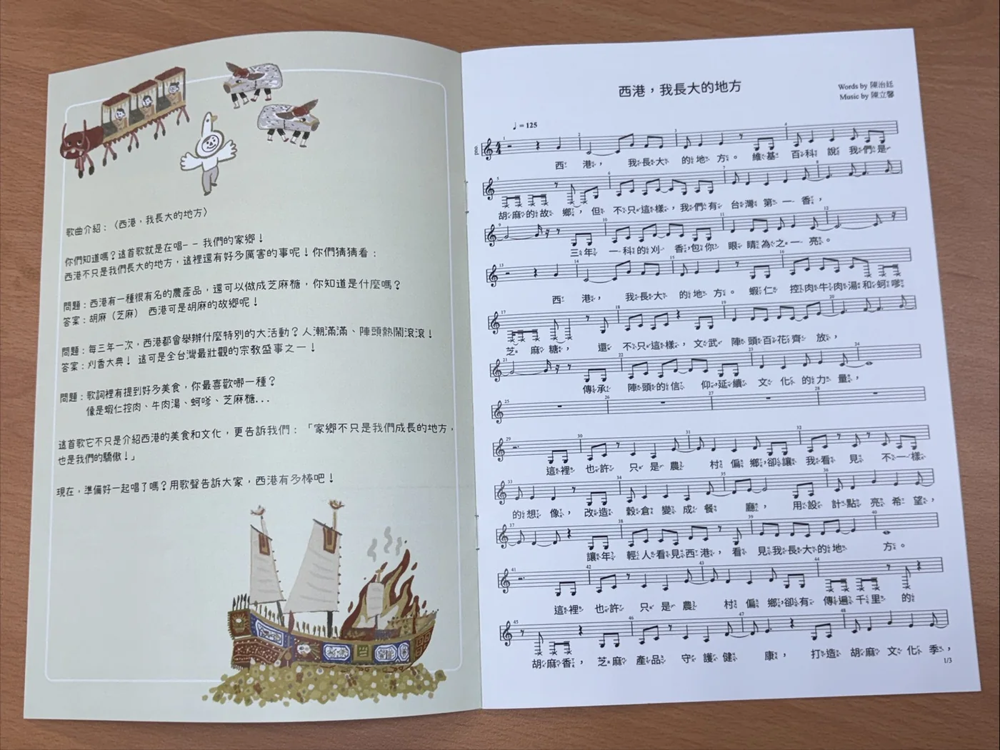
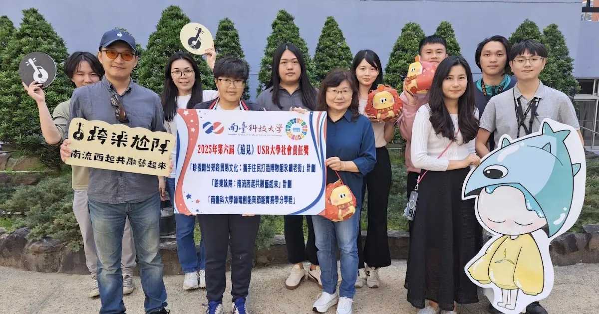
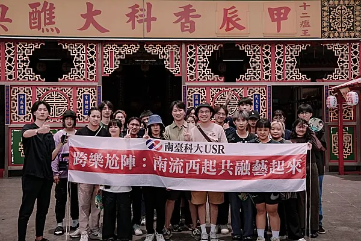

Local Heritage
西港慶安宮
香科、廟埕與地方記憶，是西港最先開口的地方。學生從這裡學會：文化不是遠遠觀看的風景，而是可以一起靠近、一起創作的生活。
往下看這段故事 Follow this threadUSR · 在地共融 · 流行音樂行動 USR · Social Inclusion · Music-led Action
南臺科技大學「跨樂尬陣」走進臺南西港，和學生、居民、孩子、長者、青農與地方夥伴一起工作。那些原本散在廟埕、田間、餐桌與記憶裡的聲音，慢慢成為歌曲、Podcast、紀錄片、音樂劇、AR 導覽與一場場可以共同參與的展演。 Inclusive Harmony in Sigang works with students, residents, children, elders, young farmers, and local partners in Tainan’s Sigang. Voices once held in temples, fields, family tables, and memory are gradually transformed into songs, podcasts, documentaries, musical theatre, AR interpretation, and shared public performances.



為什麼是西港 Why Sigang
西港有慶安宮香科、胡麻產業、地方歌謠與社區記憶。這些文化不是放在玻璃櫃裡的標本，而是仍在生活裡呼吸的日常。我們想做的，是讓年輕學習者、孩子、居民與外來的朋友，不只是觀看西港，而是能夠走進西港、聽見西港，也把自己的聲音放進西港。 Sigang holds temple rituals, sesame agriculture, local songs, and community memory. These are not objects behind glass; they are still breathing in everyday life. Our work invites young learners, children, residents, and visitors not only to observe Sigang, but to enter it, listen to it, and add their own voices to it.
對我們來說，社會共融不是把人請來坐在台下，而是讓不同背景的人能說出自己的故事、參與創作、留下聲音，甚至站上舞台。當一首歌開始有人跟著唱，地方文化也就有了新的共同作者。 For us, inclusion is not simply inviting people to sit in the audience. It is giving people from different backgrounds the chance to tell stories, create, leave a voice, and sometimes step onto the stage. When a song begins to be sung together, local culture gains new co-authors.



西港故事地圖 Sigang Story Map

香科、廟埕與地方記憶，是西港最先開口的地方。學生從這裡學會：文化不是遠遠觀看的風景，而是可以一起靠近、一起創作的生活。
往下看這段故事 Follow this thread為什麼是流行音樂產業系 Why Popular Music Industry
學生把課堂裡的演出、企劃、和聲、燈光音響與舞台實務帶進西港。專業不只停在考試和作業裡，而是在真實的人與地方之間被磨亮。Students bring performance, planning, harmony, lighting, sound, and stage practice into Sigang. Their skills are not left inside assignments; they are sharpened through real people and real places.
一次訪談可以成為 Podcast，一段記憶可以寫進歌詞，一個地方符號也能走進影像、電子書、AR 導覽與公開展演。文化因此有了新的旅行方式。An interview can become a podcast, a memory can become a lyric, and a local symbol can travel through video, ebooks, AR interpretation, and public performance.

學生、居民、孩子與長者不是被安排在旁邊觀看的人。他們在排練、訪談、創作與演出裡一起出力，也一起成為作品的一部分。Students, residents, children, and elders are not placed at the side as viewers. Through rehearsal, interviews, creation, and performance, they become part of the work itself.
成果亮點Outcomes

音樂劇把田野裡聽見的人、事與地方情感編成一場共同演出。當學生與居民站在同一個作品裡，西港文化也被重新看見。Musical theatre gathers field stories, people, and local feeling into a shared performance. When students and residents stand inside the same work, Sigang is seen anew.

歌曲讓地方記憶有了旋律，也讓故事更容易被帶走、被想起、被下一個人接著唱。Songs give local memory a melody, making stories easier to carry, remember, and sing forward.

共創歌曲與地方教材走進學校、節慶與社區活動。文化不只是被保存，而是被孩子重新使用，成為他們理解家鄉的一種方式。Co-created songs and local materials move through schools, festivals, and community events. Culture is not only preserved; it is reused by younger generations as a way to understand home.

聲音、影像、電子書與 AR 導覽，讓地方故事不只留在一次活動裡，而能在更多時間、更多地方繼續被遇見。Audio, video, ebooks, and AR interpretation allow local stories to live beyond a single event and be encountered again elsewhere.
影音與作品Media and Works
影片可以直接播放；歌曲則連到官方 StreetVoice 頁面，保留完整播放與點閱資料。這些作品不是宣傳附件，而是計畫一路走來留下的聲音足跡。Videos play directly here, while songs link to official StreetVoice pages to preserve playback records. These works are not side materials; they are sonic traces of the project’s journey.
每一首歌，都是一段地方記憶換了一種方式開口。Each song is a local memory finding a new way to speak.
公開肯定Recognition

2025
2024第四期方向Next Phase
114-116 年第四期計畫將延續地方平台、課程管線與數位文化轉譯，並深化與新加坡 Nanyang Polytechnic (NYP) 的合作。這段交流由資傳系與流行音樂產業系共同推動，鄭靜怡主任也攜手流行音樂系學生，把西港的田野經驗、聲音創作與地方敘事帶進跨國合作現場。西港不是被複製的案例，而是一個正在長大的方法：讓音樂、地方文化、數位媒體與高等教育，在跨國交流中找到新的共創節奏。The 2025-2027 phase continues the local platform, curriculum pipeline, and digital cultural translation model while deepening collaboration with Nanyang Polytechnic (NYP), Singapore. Led through collaboration between Communication and Information Technology and Popular Music Industry, Director Ching-Yi Cheng worked with PMI students to bring Sigang's fieldwork, sound-making, and local storytelling into an international exchange setting. Sigang is not a case to be copied; it is a growing method for music, local culture, digital media, and higher education to find new rhythms of cross-border co-creation.
合作洽詢Contact
歡迎與計畫團隊談工作坊、講座、跨校交流、國際合作、地方文化紀錄與共融展演。也許下一段故事，就從一次對話開始。We welcome conversations on workshops, lectures, inter-university exchange, international collaboration, cultural documentation, and inclusive performance. The next story may begin with a conversation.